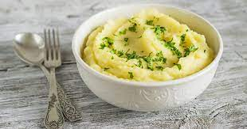

The Best Mashed Potatoes

Description
These homemade mashed potatoes are decliciously rich and creamy, full of flavor and
very easy to make. Everyone always loves these mashed potatoes so feel free to split or
double this recipes as needed for your occassion.
Ingredients
- 5 lbs of potatoes
- 2 large cloves of garlic (minced)
- fine sea salt
- 6 tbsp of butter
- 1 cup Whole mile
- 4 oz creram cheese (room temperature)
- any toppings you desire such as chives
Instructions
- Peel and cut potatoes into 1 inch pieces and transer them to pot of cold water
- Make sure there is 1 in of water above potatoes in pot. Add garlic and
sea salt to water. Turn stove to high and bring to boil. Reduce heat to maintain
boil and boil for 10-12 minutes or until knife inserted in to potato goes in easily.
- While potatoes are boiling heat butter, milk and 2 tsp of sea salt in small sauce
pan or microwave until butter is just melted.
- Once potatoes are cooked, drain water leaving potatoes in pot and place pot back
on stove. Turn heat to low and gently shake pot for approximately 1 minute to pan
dry potatoes and remove excess moisture.
- Mash the potatoes using a potato masher or using mixer to desired consitency.
- Mix in butter mixture and cream cheese to potatoes and fold in with spoon.
(feel free to add milk to reach desired consistency)
-
Add desired toppings and serve warm.